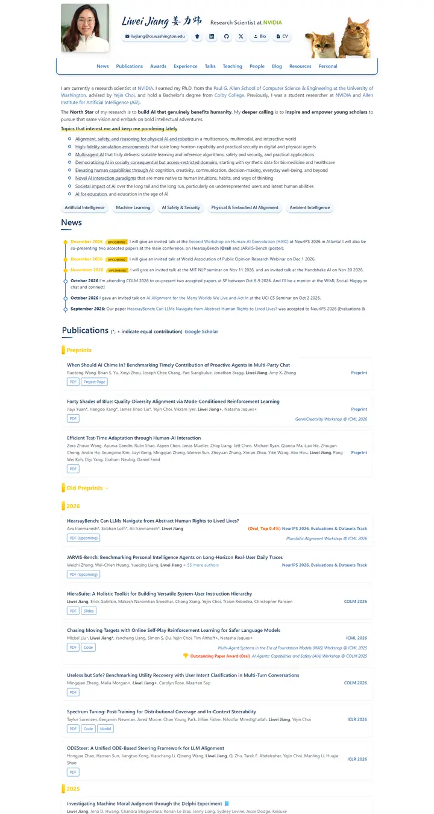

Liwei Jiang
一本整洁的海军蓝研究账本，以毛笔字签名，两只猫从标签栏上方探头，每个里程碑都盖着金色印章。

已对照实际渲染的页面核对。
入选理由
高度定制的页眉，名字做成签名样式并配有吉祥物插画，新闻按时间线排列，论文带彩色标签。略显热闹，但辨识度很高。
下面的说明和 DESIGN.md 正文是英文。为了让编程 agent 读同一个版本，这部分没有翻译。
概述
配色
字体
Avenir Next / Segoe UI
Liwei Jiang, NLP, LLM pluralism and safety
Abstract · Method · Results · BibTeX — 0123456789
Kaushan Script
Liwei Jiang, NLP, LLM pluralism and safety
Abstract · Method · Results · BibTeX — 0123456789
Ma Shan Zheng
Liwei Jiang, NLP, LLM pluralism and safety
Abstract · Method · Results · BibTeX — 0123456789
间距与形状
页面模块
使用建议
相似风格

Amir Bar
一份帝国理工蓝的简洁院系简介，白底配 Inter、胶囊链接，论文卡片在你伸手时会浮起几像素。

Christoph Feichtenhofer
一条 Facebook 蓝的会场横幅，下面是长长的论文账本，红色标题、绿色出处、两端对齐的灰色摘要。

David Novotny
黄昏的港口旁一间安静的阅览室，固定的青色到午夜蓝渐变面板上是右对齐的联系方式，白底上是柔灰文字和橘色链接。

Jaeyeon Kim
一份用细体 Roboto 排的安静研讨会讲义，唯一提高音量的，是一个红色高亮的问题和一排薄荷绿标签。

Jonathan Shafer
一张主题演讲的开场幻灯片，满版的石板蓝色块、带圆环的肖像、108px 的名字，还有一段隔着整个会场也能读清的居中文字。

Junyang Lin
暖色纸面上一本安静的研究者作品集，Garamond 标题、青绿色小标签，条目之间以细线分隔。